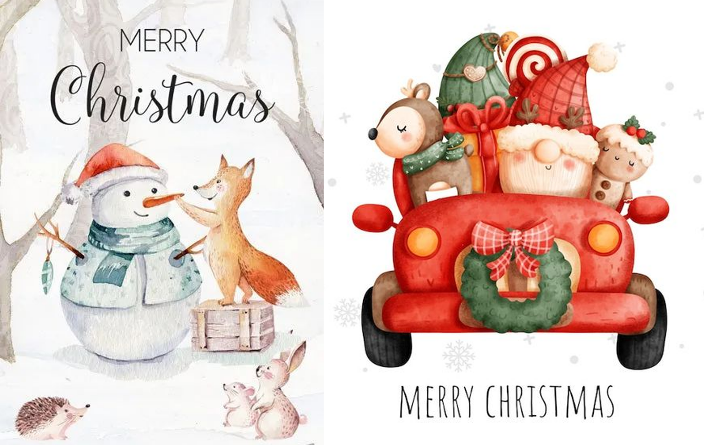

Christmas
Christmas .png)
One of the most beloved and fascinating holidays in Great Britain is CHRISTMAS.

In Great Britain Christmas is the biggest holiday a year. Catholic Christmas is celebrated on
December 25. Usually everyone gathers in the family circle, decorates the house, Christmas tree,
hangs stockings over the fireplace, and mistletoe over the doorway. Lighting deer and Santa Claus
figurines appear on the lawns near the houses, beautiful lights glow the walls and roofs.
Christmas in England is celebrated for 12 days until January 5th.
Christmas is a day off, that is, on these days the streets seem to die out, because all
institutions, shops and schools are closed, public transport and taxi services do not work, as well.
History of Christmas

The word Christmas comes from the Old English phrase 'Cristes
Maesse' - the Mass of Christ. There is also a shortened version of this word,
Xmas, which began to be used in the mid-16th century (the first letter of the name
of Christ in Greek coincides with the Latin letter X).
The history of Christmas in England has its roots in the deep past. The first written references to
the fact that the holiday was celebrated on December 25 belong to 336 AD. At that time, the first
Christian emperor Constantine ruled in Rome.
The main symbol of Christmas is
Christmas tree
There are several theories and legends of the origin of the Christmas tree:
1. There is a legend about the baptizer of Germany, St. Boniface, who decided to prove to the
pagans that the oak they worshiped does not have magical power, and cut it down. Falling, the
oak felled all the trees around it, and only a small spruce remained standing. "May it be a tree
of Christ!" - exclaimed the saint. Allegedly, since then, decorated Christmas trees have been
placed in houses for Christmas.
2. There is the story about the German reformer Martin Luther, who in 1513, returning home on
Christmas Eve, was enthusiastic by the beauty of the stars that were shining all over the sky,
so that it seemed as if the tops of the trees were glowing with stars. At home, he put a
Christmas tree on the table and decorated it with candles, and on top he put a star in memory of
the star of Bethlehem, which showed the way to the cave where Jesus was born.
3. German historian Alexander Demant claims that the first Christmas tree was displayed in
Strasbourg Cathedral in Germany in 1539.
But what we can say for sure is that the tradition of putting up and decorating a Christmas tree
came from Germany, which then spread all over the world.

First Christmas tree in the United Kingdom of
Great Britain and Northern Ireland

There were two attempts to popularize the Christmas tree.
• First attempt: In 1800, King George III and his German wife Charlotte decorated the first
Christmas tree.
• The second time the Christmas tree was decorated in England was only in 1840 by Queen
Victoria’s husband, Prince Albert of Saxe-Coburg.
But, despite the origin of the Christmas tree from Germany, Great Britain began to popularize it
worldwide, massively spreading this tradition throughout all its colonies.
For example, the Illustrated London News in 1848 published a picture of Queen Victoria, Prince
Albert and their children standing near a Christmas tree. It was a role model for everyone else.
Prince Albert and Queen Charlotte were Germans, so the tradition of decorating the Christmas
tree was brought to the West by the Germans.
According to the German tradition, the Christmas tree was decorated with gingerbread, nuts and
apples.
!!! From 1947 to this day, Norway has traditionally given Britain a huge Christmas tree, which at
Christmas is installed in London's main square, Trafalgar Square. This is a gesture to honor
Anglo-Norwegian cooperation during the Second World War.
Symbols of Christmas
 Father Christmas and Santa Claus
Father Christmas and Santa Claus

The Christian Saint Nicholas, the English Father Christmas, Scandinavian folklore characters and
pagan gods - all of them were prototypes of the modern image of Santa Claus. He was often
depicted as a giant elf, forest spirit, or religious figure. It was in American culture that the
image of Santa Claus originated, and then other countries borrowed it or created their own
variations. Already at the beginning of the 20th century, Santa had the main features of his
image: a white beard, a casing and gifts for children.
А big role in popularizing the modern Santa Claus was played by the Coca-Cola company, which
created an advertisement for soda with the image of Santa Claus, a kind and cheerful grandfather
in a red outfit.
 Advent Calendar
Advent Calendar
The very word advent comes from the Latin adventus, which means "coming", so the advent calendar
counts the time remaining until Christmas.
The sale of advent calendars starts in Britain at the beginning of December. They are usually
made in the form of a cardboard house with windows that you can open every day to Christmas.
Sweets, a note, a small gift, etc. are placed in each window. In recent years, advent calendars
are not only with sweets, but also with cosmetics, jewelry and even accessories.
 Christmas Stocking
Christmas Stocking
This is big stocking which children hang on mantelpieces or their beds. Usually every child writes his/her name on stocking, so that Santa Claus knows whose this stocking is and puts in it small gifts.
 Christmas Wreath
Christmas Wreath

Made from evergreen holly tree or spruce. This wreath symbolizes vitality, immortality and wards off evil spirits.
 Mistletoe
Mistletoe
A sprig of mistletoe is hung in the house and the couple who passes under it must kiss. Mistletoe has long been regarded as a sacred plant that fosters love and friendship.
 Christmas cracker
Christmas cracker
This is a Christmas cracker that resembles a large candy bar. Most often, firecrackers are placed near the plates at the festive table. They contain a small gift, be it a paper crown, a toy, a mirror, or jokes. Two people pull the "cracker" from both sides, so it explodes.
Royal speech

In Britain, Christmas wouldn't be Christmas without the King's speech. For the past few decades, this speech has been given by Queen Elizabeth II. However, since Queen Elizabeth died on September 8, 2022, her successor, Charles III, will now give the Christmas speech. The tradition dates back to 1932, when then-King George V congratulated people in a radio broadcast.
Christmas cards

Christmas cards are pretty popular in Great Britain. Since the 19th century they have become popular to send Christmas cards – instead of personal congratulations. More than one billion cards are sent out every year before Christmas in a country with a population of 60 million.

First Christmas card was invented by Sir Henry Cole, a British civil
servant.
Story began with the writer Charles Dickens which, in 1843, published the
story-tale "A Christmas Carol", which actually started the commercial
celebration of Christmas. Inspired, Cole asked his illustrator friend John Horsley to design
a fun card to give to family and friends.
Pantomimes
The biggest Christmas tradition is essentially a theatrical production of traditional fairy tales
such as Jack and the Beanstalk or Cinderella. Pantomimes are aimed at families with children and are
performed by little-known celebrities.
Usually in these skits there is a woman (played by a man dressed as a woman) who plays a comical
role in the show. In the story, she is often the friend of the main character and supports him in a
competition against a cunning villain. Every time a villain appears, the audience is encouraged to
join in his ridicule, booing and hissing.
 Christmas cuisine
Christmas cuisine
Mince pies

These are sweet Christmas pies with a fruit filling made from fruit alcohol and spices. It is aged for four months for the best aroma. This pie is important dish on any Christmas feast.
6 Christmas movies
 1. The Grinch (2018)
1. The Grinch (2018) 

The Grinch is an introvert who lives in a dark cave at the very top of a mountain away from everyone. But all the people are getting ready to celebrate Christmas. They decorate literally everything, make noise, sing songs that are very annoying. The Grinch loses his patience and decides to ruin Christmas. With his dog, he develops a criminal plan to spoil the holiday. He decides to steal Christmas from people!
2. Rise of the Guardians (2012)

Evil boogeyman Pitch threatens to take over the world, take away the most precious thing - childhood dreams and fill it with fear. But five heroes of fairy - Santa Claus, the Easter Bunny, the Tooth Fairy, the Sandman and Ice Jack - will try to stop his plans. They need to be brave and show courage to defeat a powerful enemy and protect children's dreams.
3. Frozen (2013) | Frozen Fever (2015) | Frozen (2019)

The future queen of Erindelle, Elsa, is a girl with extraordinary strength who can create ice with one wave of her hand and freeze with one touch. As a child, while playing with her sister, she almost killed her sister by mistake, after which she avoided everyone for fear of harming someone else. And when the kingdom is threatened by an eternal, cold and harsh winter, Princess Anna, Kristoff and the reindeer will try to save Erindelle from certain death, and only one person can do this - Elsa.
4. Arthur Christmas (2011)

Ever wonder how 2 billion presents get delivered all in one night? Thanks to a well-built system of hundreds of elf assistants who help deliver Santa Claus’s presents, but it can also go wrong. A girl may not receive her Christmas present because it got lost. And when everyone is in turmoil deciding what to do, Santa Claus's youngest son Arthur is going to go on his father's reindeer sleigh on an exciting journey to deliver the present to the girl.
5. The Boss Baby: Christmas Bonus(2022)

Older brother Tim, like the whole family, is preparing for Christmas, but Boss Baby is not in such a Christmas mood, because he knows what Santa Claus actually does. He exploits the labor of babies in his toy factory, passing them off as elves. Boss Baby got at the North Pole at Santa's residence and will try to start a strike among children to disrupt Christmas.
6. Ice Age: A Mammoth Christmas(2011)

Everyone is preparing to celebrate Christmas and Manny decides to show his little daughter their family heirloom - the Christmas stone. But Sid manages to damage it and Manfred says that Santa will write your name in blacklist, which means he will not receive a gift for Christmas. Then the sloth went to the North Pole to ask Santa Claus for forgiveness. All his friends follow Sid.